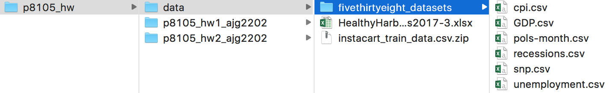
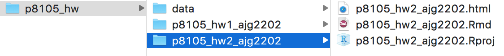

This assignment reinforces ideas in Data Wrangling I. A PDF of this assignment is here.
Due: October 4 at 5:00pm.
This “problem” focuses on structure of your assignment, including the use of R Markdown to write reproducible reports, the use of R Projects to organize your work, the use of relative paths to load data, and the naming structure for your files.
To that end:
p8105_hw2_YOURUNI (e.g. p8105_hw2_ajg2202 for Jeff)p8105_hw2_YOURUNI.RmdSome of the datasets used in this homework are large, so you should not include raw data files in your directory. Instead, create a separate directory called data and use relative paths starting with ../data/ to load data. We’ll have a similar directory and should be able to knit your R Markdown file. The screenshot below illustrates this configuration.

Your solutions to Problems 1+ should be included in your .Rmd file, and your submission for this assignment will be a zip file of the directory named p8105_hw2_YOURUNI. The required structure is shown below.

We will assess adherence to the instructions above and whether we are able to knit your .Rmd – that is, whether your work is reproducible – in the grading of this problem. Adherence to appropriate styling and clarity of code will be assessed in Problems 1+.
This problem uses the Mr. Trash Wheel dataset, available as an Excel file on the course website.
Read and clean the Mr. Trash Wheel sheet:
range argument and cell_cols() function)as.integer)Read and clean precipitation data for 2016 and 2017. For each, omit rows without precipitation data and add a variable year. Next, combine datasets and convert month to a character variable (the variable month.name is built into R and should be useful).
Write a paragraph about these data; you are encouraged to use inline R. Be sure to note the number of observations in both resulting datasets, and give examples of key variables. For available data, what is the total precipitation in 2017? What was the median number of sports balls in a dumpster in 2016?
This problem uses the FiveThirtyEight data; these data were gathered to create the interactive graphic on this page. In particular, we’ll use the data in pols-month.csv, unemployment.csv, and snp.csv. Our goal is to merge these into a single data frame using year and month as keys across datasets.
First, clean the data in pols-month.csv. Use separate() to break up the variable mon into integer variables year, month, and day; replace month number with month name as above; create a president variable taking values gop and dem, and remove prez_dem and prez_gop; and remove the day variable.
Second, clean the data in snp.csv using a similar process to the above. For consistence across datasets, arrange according to year and month, and organize so that year and month are the leading columns.
Third, tidy the unemployment data so that it can be merged with the previous datasets. This process will involve switching from “wide” to “long” format; ensuring that key variables have the same name; and ensuring that key variables take the same values.
Join the datasets by merging snp into pols, and unemployment into the result.
Write a short paragraph about these datasets. Explain briefly what each dataset contained, and describe the resulting dataset (e.g. give the dimension, range of years, and names of key variables). In Januarys in or after 1975 in which a democrat was president, what was the average unemployment rate?
Note: we could have used a date variable as a key instead of creating year and month keys; doing so would help with some kinds of plotting, and be a more accurate representation of the data. Date formats are tricky, though. For more information check out the lubridate package in the tidyverse.
This problem uses the Instacart data. Note that the data can be loaded as a zipped csv file by read_csv() – no need to unzip the data first.
The goal is to do some exploration of this dataset. To that end, answer or address the following:
distinct (in addition to other functions) may be helpful.days_since_prior_order.